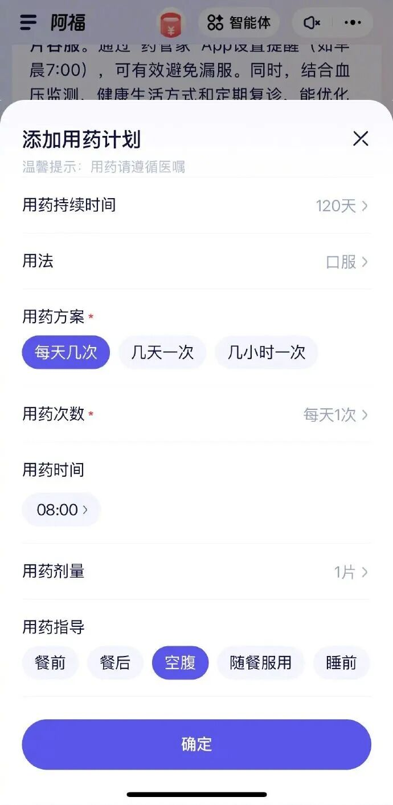
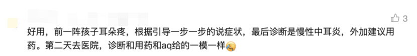

健康信任大迁徙：为什么是“蚂蚁阿福”？
点击蓝字

关注我们
导语
12月15日，蚂蚁集团旗下AI健康应用“AQ”悄然升级为“蚂蚁阿福”。此事在科技圈激起波澜，却在医药行业的舆论场中鲜有报道。近一个月过去，其用户数据浮现——月活突破3000万，超半数用户来自三线及以下城市，且产品公开承诺“不进行任何广告和推荐”——一个信号已不容忽视：AI医疗，这次真的照进现实了。
如同第一笔线上交易诞生时，很难想象几年间生活方式和商业生态将彻底重塑。我们隐约感到，某种更深层、更根本的变化正在发生：大众对健康的信任，正以前所未有的规模与速度，从传统的医院、药房等实体节点，向线上虚拟的AI入口转移。这注定将重构医药流通的价值链条与权力格局。
作者｜灵药编辑组
编辑｜灵药编辑组
本文字数：2208字
阅读时间：*6分钟*
01
*不可逆的信任“线上化”*
蚂蚁阿福的产品架构围绕三大核心功能模块展开：健康问答、健康陪伴与健康服务。这三大模块共同支撑起其从“AI工具”向“AI健康朋友”的定位升级。
健康问答是应用的基石。用户可通过文字、语音或拍照（如皮肤状况、体检报告、药盒）发起咨询。其背后不仅有经过医疗语料训练的AI模型，更有500多位名医的“AI分身”提供专业支持，累计解答了超过2700万个健康咨询。
健康陪伴是阿福形成差异化粘性的关键。通过“健康小日记”、“健康小目标”和“健康小提醒”等功能，它鼓励用户记录并管理健康数据，提供日常陪伴。同时，它接入了苹果、华为、鱼跃等近十个品牌的智能设备，实现了对运动、心率、睡眠等动态数据的同步。

健康服务方面，阿福明确声明其回答“并非医疗诊断”，但对于进一步的就医需求，它能一键连接全国30万真人医生的在线问诊服务，并覆盖从挂号、购药到医保支付的全流程。
从用户画像上来看，超过55%的用户来自三线及以下城市。这验证了其在医疗资源相对薄弱地区的巨大价值。在产品体验上，阿福强调“无痕拍”等隐私保护功能，并为回答的准确性和有用性投入大量标注与训练。最引人瞩目的是其公开承诺 “不进行任何广告和推荐” ，旨在与传统的、充斥营销信息的健康信息平台划清界限。
而从部分人群的试用体验来说，有网友称其为：“AI版的《默沙东诊疗手册》”


中国互联网大厂在“AI+医疗健康”赛道上的钻研并非初次，蚂蚁阿福的走红，有何特别之处呢？
京东健康和阿里健康的核心逻辑是“服务即交易” ，其AI是用来优化这个交易链条的；而蚂蚁阿福试图构建的逻辑是 “信任即入口” ，它希望通过高频的日常陪伴建立信任，再将这种信任导向可能发生的服务。它的对手不是另一个医疗平台，而是用户健康习惯的起点。
蚂蚁阿福的迅猛增长，迅速引发了全球范围的关注。2026年1月7日，OpenAI正式推出了ChatGPT Health功能，因其提供健康问答、报告解读、连接智能设备等能力，被外界普遍视为对阿福模式的跟进与验证。OpenAI官方数据也侧面印证了这一赛道的潜力：在ChatGPT Health推出前，全球每周已有超过2.3亿人次在ChatGPT上咨询健康问题。
总结而言，蚂蚁阿福的初步成功，揭示了一个正在发生的深刻变化：大众对健康信息的获取入口，正从传统的搜索引擎和电商平台，向一个更智能、更私密、更注重日常陪伴的“对话式AI健康体”迁移。它激活的，是海量的、介于“完全健康”与“必须就医”之间的日常健康管理需求。
02
冲击传统医药价值堡垒
传统医药价值链遵循着“研发-生产-流通-营销-终端”的线性逻辑，其核心驱动力是“专业权威”。蚂蚁阿福们所做的，是构建了一个平行的“信任入口”，将海量用户的日常健康咨询、管理需求截流。这不再是渠道的线上化，而是决策起点的前置化与入口的中心化。
传统模式下，信息传递的流程是药企→医药代表→医生（KOL）→患者。核心是影响处方者，信息传递单向、漏斗状。AI冲击下，患者/潜在患者→AI健康助手→（可能的）医生/服务。AI成为用户的“第一咨询对象”，它提供的疾病知识、用药建议、生活方式管理的准确性与倾向性，将极大影响后续行为。
而流通企业的价值体现在覆盖网络的广度、物流效率与资金周转。在AI入口可能集中化流量的未来，单纯的“搬箱子”业务附加值会持续降低。
对于线下药店，核心价值在于地理位置（便捷性）、药师当面咨询（专业性）以及即时的商品可得性。当AI能提供7x24小时、隐私性更强的初步咨询，并能一键连接在线问诊和送药上门时，药店的地理优势被削弱。
如果AI的“健康档案”足够完善，它甚至能比用户更了解其用药史和健康需求。未来药店是否将退化为“体验中心+前置仓+紧急供应站”？其核心竞争力是否应转向深度健康管理服务（如慢病管理、康复指导、医疗器械租赁）、以及作为AI推荐服务的线下履约和信任背书载体？
价值链的重构并非一帆风顺，它正将行业带入充满机遇与挑战的“深水区”。
AI健康应用的核心燃料是高质量、高粘性的个人健康数据。这引发了关于数据主权的深刻问题：医疗数据是归医院、患者、还是AI平台所有？如何在不共享原始数据（保障隐私）的前提下，实现价值的共创（如训练更精准的模型）？
当AI的建议深度影响患者行为，责任如何划分？是平台、算法开发者、背后的知识提供医生，还是用户自己？
匈牙利教授在WAIC论坛上倡议，必须“确保人工智能医学发展的安全性和有效性”。这需要明确的责任界定和伦理准则。行业已开始行动，《生成式医学AI临床伦理治理专家共识（2025）》提出对AI系统实施强制置信度评分。这意味着，未来所有接入AI系统的药品知识库，其证据等级和表述的准确性将受到前所未有的严格审视。
蚂蚁阿福的“无广告”承诺赢得了初始信任，但也抛出了终极问题：可持续的商业模式是什么？
可能并非传统的流量变现，而是基于价值的服务付费。例如，药企可能为接入AI系统的、经过严格验证的疾病管理模块付费；保险机构可能为AI驱动的健康管理效果支付费用；用户可能为更深度、个性化的健康规划服务订阅付费。
AI健康入口带来的并非简单的线上化替代，而是一场基于信任转移的、深刻的价值网络重塑。传统的线性“价值链”正在瓦解，取而代之的是一个以AI为智能调度中心，深度融合了药企、流通商、医疗机构、保险支付方乃至患者的动态、协同价值网络。
信任的“移民”或许不会摧毁现有的医疗体系，但它正在重新划分影响力的版图。问题已不再是变化是否来临，而是我们选择以何种姿态，融入这条崭新的、由代码与信任共同编织的价值链条之中。
图片来源：
公众号「差评X.PIN」评论区
公众号「华尔街见闻」
公众号｜商业灵药
商业模式/大咖观点/市场动态/融资信息
主编｜程灵素
微信号｜Lingsu-land

本文由 ShawnCH（何智翔）轉發，透過微信聊天記錄自動提取並整理。 原文連結：https://mp.weixin.qq.com/s/XVTBIMdmzIuiCvx4OYBeUA